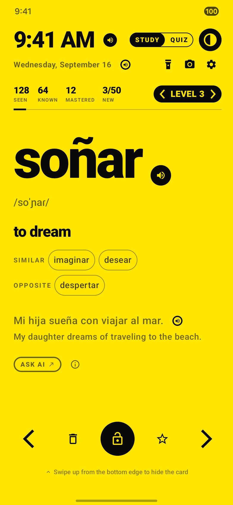
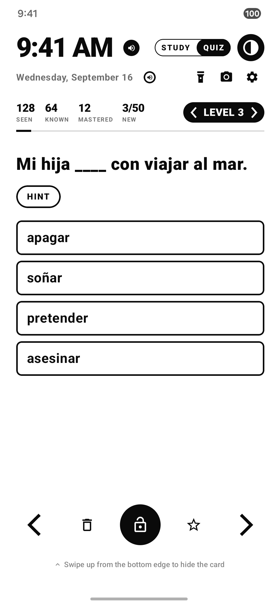
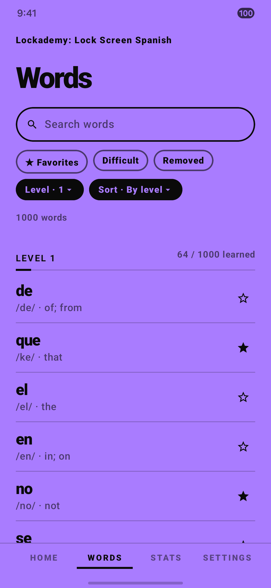

Set it up
- Open the app and answer the short setup questions. You can change every answer later.
- When asked, allow Display over other apps. The card can't appear without it. Notifications and Ignore battery optimization are recommended, because they keep the study service running.
- On the Home tab, make sure Lock screen study is switched on.
- Turn your screen off, then on again. Your first card appears. To see it without locking the phone, tap Preview the card on the Home tab.
Use the word card
Tap the card to see the meaning, then tell the app whether you knew the word. That answer decides when you see the word again.

Bottom row, left to right
| Left arrow ‹ | Show again. You didn't know it, so it comes back soon. Swiping the card left does the same. |
|---|---|
| Trash can | Removes the word from your deck. |
| Round lock | Unlocks your phone with your usual PIN, pattern, fingerprint or face. |
| Star | Saves the word to your favorites. |
| Right arrow › | I know this. It comes back later. Swiping the card right does the same. |
To hide the card without unlocking, swipe up from the very bottom edge of the screen.
Top of the card
| Speaker buttons | Read the time, the date, the word or the example sentence aloud in Spanish. |
|---|---|
| STUDY | QUIZ | Switches between word cards and quiz questions. |
| Half-filled circle | Changes the color theme. There are 18. |
| Flashlight, camera | Shortcuts, so the card never gets in the way of them. |
| Gear | Opens the app after you unlock. |
| ‹ LEVEL › | Changes the word level. Level 0 teaches the alphabet and its sounds. Levels 1 to 6 hold 10,000 words, starting with the most common. |
| Seen, Known, Mastered, New | Your progress. Tap any number for a short explanation. |
Test yourself with the quiz

Tap QUIZ at the top of the card. You get a Spanish sentence with one word missing and four choices.
Stuck? Tap Hint to see the sentence and all four choices in English.
Your answers count toward your progress, just like the arrows on a study card.
How words come back
The app uses Smart review by default. Words you find hard return soon, and words you know return less often, until a mastered word appears only about once a month.
The New counter, such as 3/50, shows today's new words against your daily target. It is a pace, not a limit. You can keep studying after you reach it.
Prefer to go straight down the list? Choose In order under Settings > Word order. The arrows then move to the previous and next word.
Inside the app

| Home | Your streak, today's progress, the on/off switch and the card preview. |
|---|---|
| Words | Search every word. Filter by favorites, difficult words or level. To bring back a word you removed, tap Removed, then Restore. |
| Stats | Your streak, word counts and quiz accuracy. |
| Settings | Everything below. |
Settings most people change
| Word level | Which level new words come from. |
|---|---|
| New words per day | Fewer new words keeps tomorrow's reviews light. |
| Display frequency | Every time, once an hour, every 3 hours, or off. |
| Always show meaning | Skips the tap and shows the meaning at once. |
| Quiet hours | No card during the hours you pick, such as overnight. |
| Daily reminders | Two study reminders a day, at times you choose. They are skipped if you studied recently. |
The Remove Ads purchase
The app and all of its features are free. Remove Ads is an optional one-time purchase that takes the ads off the lock screen card and out of the app. It is not a subscription, and there is nothing else to buy.
- To check it worked: open Settings and scroll to Ads. The Remove ads row shows Ads removed.
- New phone or reinstall: install the app with the same Google account and open it once while online. The ads stay off and you don't pay again.
- Other Lockademy apps: the purchase covers this app only.
If something isn't working
The card doesn't appear
- On the Home tab, check that Lock screen study is on.
- In Settings > Permissions, check that Display over other apps is allowed.
- In Settings, check that Display frequency isn't set to Off, and that you aren't inside your Quiet hours.
- In Settings > Permissions, allow Ignore battery optimization. Samsung and Xiaomi phones have an extra setting for this, explained on the same screen.
The card also steps aside during phone calls and while an alarm is ringing. That is intentional.
I can't hear anything
Your phone may not have a Spanish voice yet. Go to Settings > Spanish voice and tap Install. It's free.
I still see ads after buying
Open the app while connected to the internet, so it can confirm your purchase with Google Play. Then check Settings > Ads.
Samsung Wallet won't open from the lock screen
Swipe up once from the very bottom to hide the card, then swipe again to open Wallet.
There's always a "Lock screen study is on" notification
That's normal. Android requires it while the app waits for your screen to turn on.
I want to turn the card off
Switch off Lock screen study on the Home tab. Your progress is kept.
Still stuck? Email hustlinup.org@gmail.com or tap Contact us in Settings. A real person reads every message.